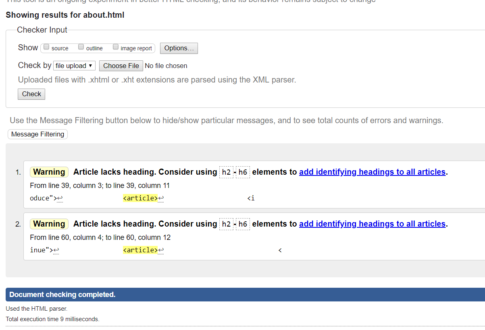

Web development is the process of creating websites and web applications. Basically, it deals with the design and functionality of the website. There are two side to it, thye are front-end and back -end. Where, frontend is only the design and ui, back end is the process of how the web works.
Using HTML ,CSS, JavaScript a common webpage can be built.
A task to make a portfolio website was given. As per the instructions, only HTML and CSS were to be used to design the site. The requirements were having six pages including a landing, biography, cv, mgp, social links and contact pages, using Flex properties and making responsive site
So, to complete the task various methods were used. The task was discussed with a teammate, though not formal, several other similar websites were taken as design models and various online references were accessed in order to find the best solution the task. This way the UI design was finalized.
Table of Contents
Introduction
User Interface [UI]
UI is the front design of the website. This is what the users will interact to. Website can be built in any ways with just the HTML codes alone, but having a good UI is the key to built proper user-friendly webapps and sites. Therefore, to achieve a proper UI for the website, various modern Websites were referred which were good for current UI practice. Although many sites were available following are the few that seemed current:
- https://serioverify.com/
- https://serioverify.com/
- http://droitlab.com/html/smith/v1/main/index-3-dark.html
- http://droitlab.com/html/smith/v1/main/index-3-dark.html
- https://www.dropbox.com/business/
- https://www.dropbox.com/business/
These websites fulfill the current model needs of a good UI. All three websites are responsive. There are Material design applied in all three sites. Though they are not pure HTML and CSS only designed, they still provided the correct examples of the current UI design practices. Therefore, these three sites were considered while planning the UI designs.
Considering the features of those websites, I got many ideas and hence, was able to design my own website with certain example features.
My website follows a uniform colour scheme of grey,violet,black and white. The website is responsive as it uses CSS Media Queries , Animations, Transitions and Flex properties. It follows a simple and tidy design.
Experience
The very first time I made a webpage of my own was when I was just a middle schooler.
And the first reaction I had was "WOW!". Being able to make my own webpage felt like an achievement during that time. It was five years back that pulled me towards what I am doing right now. This was the start to my journey to front-end developing.
To broaden my knowledge, apart from the school I took extra classes ho web developing. This is how I have become who I am today.
Although it was an individual task, because having more ideas and suggestions, is always a better option, an informal pair discussion was done. From the discussion, apart from the referred websites, new design ideas were invoked. However, to make each of our work unique different UI designs were considered.
Referring to the various sites applying material designs and reponsiveness, own ideas were created for which Wireframes and screen mockup were prepared.
Wireframes and Screen Mockups
Wireframes


Mockup
Validation
The html and css files were checked in the official website of w3 validator "https://validator.w3.org/nu/#file" . It was helpful to correct any errors present in the source code. This corrections were made and lessons were learned by checking validation.
Following is the evidence of the validation:
- 
Evidence
Implementation
Following are some screenshots of the source code which were validated:
Source Code
Conclusion
Creating a website of own was an intriguing assignment. This way new things were learned and mistakes were corrected. This task resulted to be a progressive experience.
This is all thanks to the College and respected related parties.
References
- Howe() Lesson 8 Transitions & Animations. Available from: https://learn.shayhowe.com/advanced-html-css/transitions-animations/ [Accessed 20th March 2018]
- Cope(2017) Trasition. Available from: https://css-tricks.com/almanac/properties/t/transition/ [Accessed 20th March 2018]
- w3chools() CSS Transitions. Available from: https://www.w3schools.com/css/css3_transitions.asp [Accessed 20th March 2018]
- w3chools() Responsive Web Design - Media Queries. Available from: https://www.w3schools.com/css/css_rwd_mediaqueries.asp [Accessed 5th April 2018]
- Font Awesome () Icons. Available from:https://fontawesome.com/icons?d=gallery [Accessed 5th April 2018]
- Google(2018) Lesson 8 Transitions & Animations. Available from:https://www.google.com/maps/@27.7249989,85.3807884,15z [Accessed 20th April 2018]